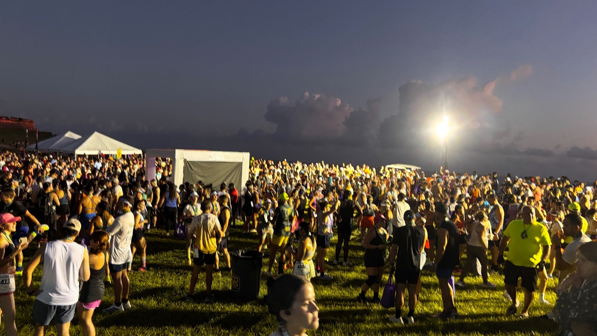
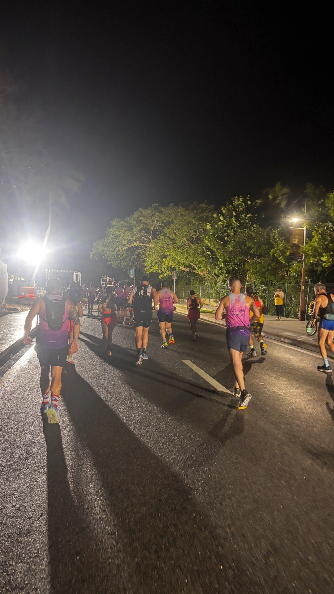
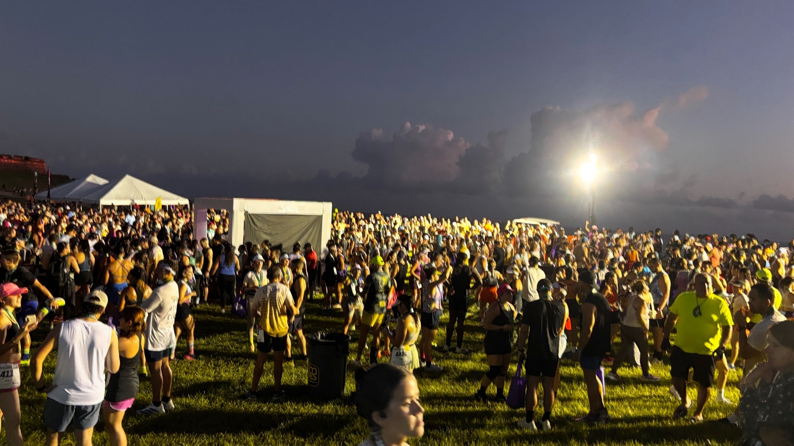
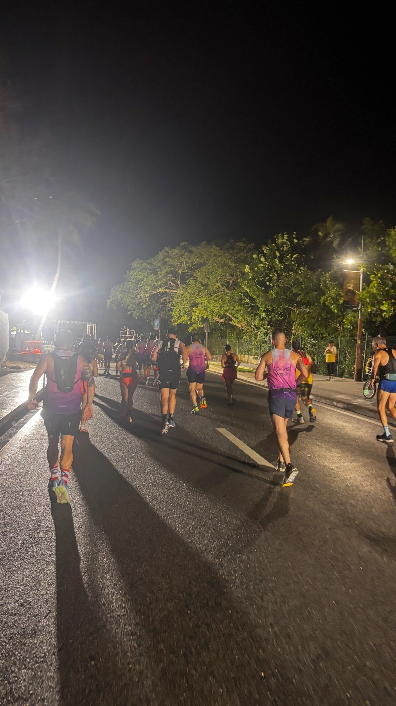
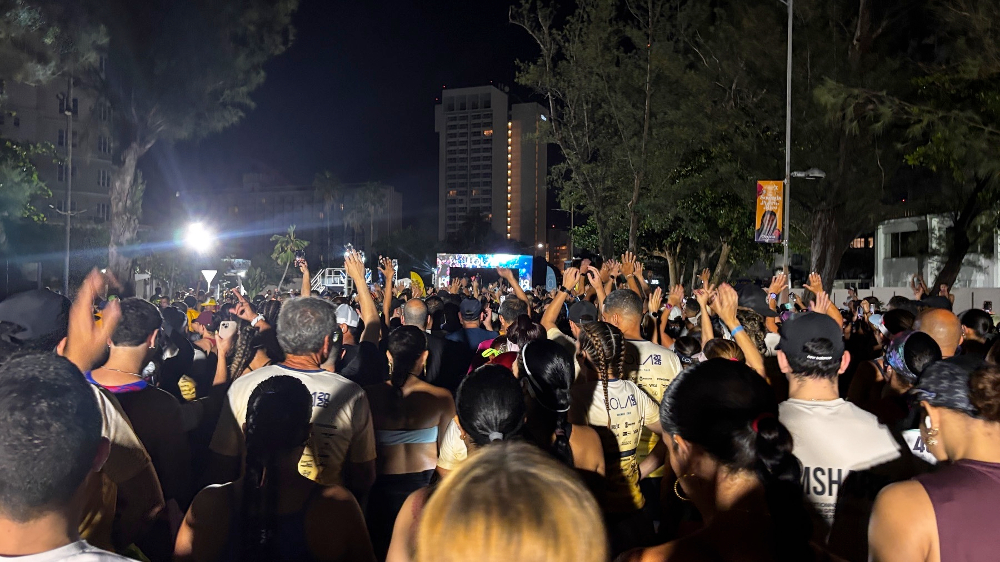
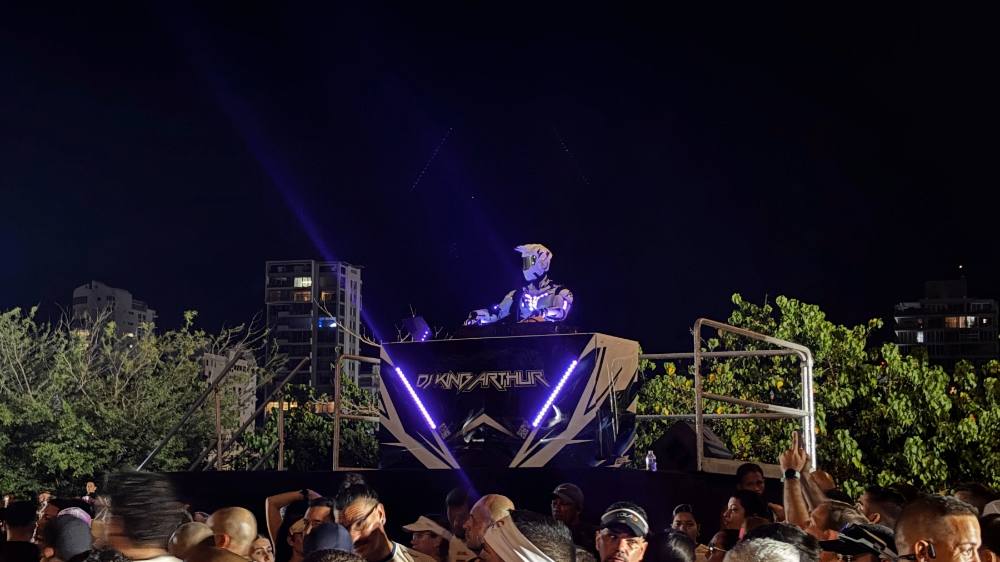
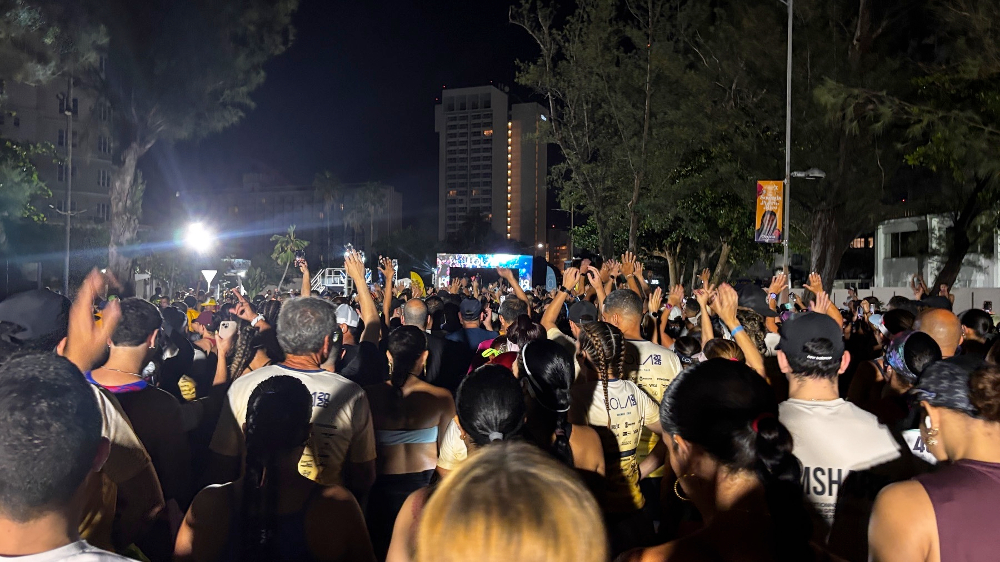
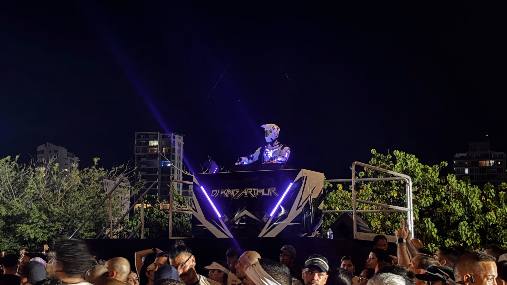

Watched: Assassination Games 🍿 A few script revisions and a more competent director would’ve made a gem. This one fails JCVD and Adkins. Especially JCVD. It’s a bleak movie. They are trying to act above their pay grade. Not a lot of action. What it has is ok. Ambitious failure?
Watched: Ran 🍿
Primera vez que veo Ran. Es un espectáculo monumental. Colores deslumbrantes, batallas épicas, actuaciones operáticas y todos los cliches positivos! Kurosawa estaba cabrón.

Finished reading: Control Freak by Cliff Bleszinski 📚 I knew the Epic Games stories, Unreal etc but I was curious about how Cliffy B would portray himself. Not sure his intention was to come off as an asshole trying to polish up his image but thats how he comes across. Still worth a look
Fin de semana del Lola Challenge. Completé los tres eventos. Muy bien organizado. Tremendo apoyo. 10 mil corredores! Probablemente el mejor evento de running en Puerto Rico!

 
 

Watched: The Naked Gun 🍿 This movie is hilarious! Need to watch again, I’m sure I missed plenty of jokes.

Finished reading: Absolute Batman 2025 Annual (2025-) #1 (Absolute Batman… by Daniel Warren Johnson 📚
Deje de leer Absolute Batman por que en verdad, esta caro para lo que es. Le metí mano a este Annual por el hype en internet. El arte es arte de DWJ, si te gusta te gusta. La historia es DWJ de nuevo en sus viajes de relaciones jodidas entre padres e hijos. La indignación de algunos con Batman peleando con policias y supermacistas es estupida. Esa gente no leyó Dark Knight Returns? La segunda historia, de James Harren me gustó mucho. Es otro spin en los mismos temas de la historia principal pero dentro de un teenage home invasion type story con Batman como el monstruo. Good shit. Es caro para lo que es pero se deja leer.

Finished reading: Mighty Morphin Power Rangers/Usagi Yojimbo #1 by Ryan Parrott 📚
Lo compré por completista de Usagi Yojimbo. No esoty muy familiarizado con los comics de los Power Rangers pero me parece que los presentaron bien. El arte es bien refrescante y el estilo funciona tanto para los personajes antropomórficos comopara los humanos regulares. El manejo de Usagi estaba off. Su dialogo interno no se sentía consistente. Creo que Sakai le debió dar un pase. Ok, disposable entertainment.

Finished reading: It’s Lonely At The Centre Of The Earth by Zoe Thorogood 📚
The Samurai Rabbit Paradox: How Stan Sakai Mastered 42 Years of Usagi Yojimbo with Honor and Absolute Control
Test of the podcast feature of Micro.Blog with a quick Notebook NLM “deep dive”. You can almost pretend it’s actual people if you speed it up a bit. Listen at 1.25x or 1.5x.
Carrera CPS 5K. Fui con varios compañeros de trabajo. Ruta chevere, plana. Buen ambiente! Mucha juventud corriendo 🏃♂️


Finished reading: Public Domain, Volume 1: Past Mistakes by Chip Zdarsky 📚 Witty love letter to the USA comics medium and Industry
Watched: Highest 2 Lowest. 🍿 Watched Highest 2 Lowest on a plane. Great environment for the movie, the movie is constantly hitting you in the face with music. I think if you have not seen the original, you will enjoy this one more. Denzel is one of the great actors of his generation but I think hes a bit too old for the character. Wish his part was played by Jeffrey Wright and Jamie Foxx played the Wright part
Watched: The Fall of Ako Castle 🍿 Can’t believe it took me this long to watch this version of the 47 Ronin story. Watched The Fall of Ako Castle last night. Wish it had a bit more background on the Kira/Asano feud. The final battle is Fukasaku firing on all cylinders. Fantastic.